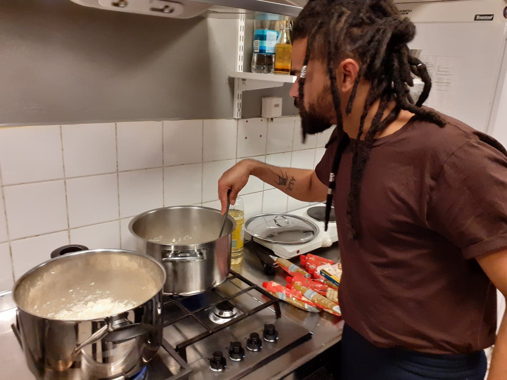

ALLA SKA FÅ MAT
Efter förmåga – utifrån behov – med respekt, kärlek och omtanke.
Vi är en ideell förening med namnet ”Alla ska få mat”, med syfte att hjälpa människor i utsatthet. Vi kämpar för att förmedla medmänsklighet och hopp till dem som har det svårt, och vill försöka bidra med den trygghet det innebär att åtminstone inte behöva svälta.
Grundtanken är att laga mat och erbjuda till dem som till följd av en osäker tillvaro på arbetsmarknaden eller långvarig sjukdom nu drabbas extra hårt. Vi tror att detta behov bara kommer att öka en tid framöver, och vill därför göra vad vi kan för att stödja, hjälpa och underlätta tillvaron för dem som nu lever under tuffa förhållanden..

VAD KAN JAG GÖRA?
Om jag vill bidra på något sätt!
De som har så att de klarar sig och känner att de kan bidra är innerligt välkomna att förmedla det till oss. Det kan vara vad som helst som bidras, så länge det kommer till nytta så blir vi alla glada.
Swishar gör du till 076 702 66 13 och skriver ”Alla ska få mat” Vill du erbjuda din tid och dig själv så kan ni meddela det till oss, ni hittar kontaktinformation under fliken kontakt på den här sidan. Ni når oss enklast genom att skicka ett meddelande på messenger till Millan Tylim eller Lisa Nilsson och dem hittar ni i vår Facebookgrupp Alla Ska Få Mat, direktlänk till gruppen finns under kontakt på Facebook symbolen.
Vi samarbetar gärna med andra företag, grupper och organisationer, till exempel grupper som arbetar med matsvinn, restauranger och butiker som har överbliven mat att skänka, second hand-butiker…

Om jag behöver hjälp!
Behöver du hjälp?
Kontakta oss gör ni enklast genom att skicka ett meddelande till Millan Tylim eller Lisa Nilsson på Messenger. Ni hittar dem i våran Facebookgrupp Alla Ska Få Mat,
länk till gruppen hittar ni under kontakt, klicka på Facebooksymbolen så kommer ni direkt till gruppen. Det går även bra att maila oss eller ringa, mer info om det hittar ni även det under fliken kontakt.
Vi känner stor respekt för den personliga integriteten och kommer inte att lämna ut några
uppgifter om dig eller om din situation.
Känner du ändå att du vill vara mer anonym och vill ringa från skyddat nummer så slå #31# innan telefon nummret så visas inte ditt telefonnummer upp.

INSTAGRAM BILDER
MEDIA
Intervju P4
João startade soppkök för att hjälpa pandemidrabbadeArtikel Mitti
De mättar hungriga magar under pandeminSOS alarm
Det är tuffa tider just nu men det finns fortfarande vardagshjältar. Initiativet "Alla ska få mat" delar ut måltider till behövande människor i Stockholm.Intervju Brasiliansk tidning
Brasileiro que mora na Suécia cria rede para distribuir comida na pandemia...KONTAKT
076 702 66 13
info@allaskafamat.se
HISTORIA
Vi startade som en Facebook-grupp i samband med corona-utbrottet i våras. Det blev då väldigt tydligt hur många människor som lever under svåra förhållanden, och som blir ännu mer utsatta i en krissituation. Stor arbetslöshet och långvarig sjukdom är två faktorer som bidrar till att många idag mår riktigt dåligt, och det är flera som har fått se hela sin tillvaro raseras. För dem som redan tidigare fick kämpa för att få det att gå ihop blev det nu ohållbart, och det är flera som har fått se hela sin tillvaro raseras. Vi bestämde oss då för att göra vad vi kunde för att underlätta och hjälpa.
Allting började med det här uppropet på Facebook:
Just nu är det svåra tider överallt. Hela världen påverkas av corona-viruset, som förutom att sprida sjukdom även drar med sig arbetslöshet och fattigdom. För dem som redan tidigare hade det tufft blir livet nu ännu hårdare. Många, både unga, gamla och små barn, får gå utan att kunna äta sig mätta, ja, ibland utan att ha mat överhuvudtaget. Hygienartiklar, som ju blivit så viktigt idag för att förhindra ytterligare smittspridning, är en ouppnåelig lyx.
Hur skulle det kännas för dig om du måste ta hand om din egen mamma, eller din gamla älskade farmor, och samtidigt visste att du riskerar att smitta dem, för att du inte har råd att köpa tvål eller alcogel? Ingen annan kan ta hand om dem, det finns bara du som kan göra det.
Hur känns det när du återigen inte kan sova för att magen skriker av hunger? Samtidigt som ditt lilla barn gråter av samma anledning? När du inte hade någon mat hemma igår, eller idag, och inte kommer att ha det imorgon heller. Hur känns det när ditt hjärta är fullt av ångest för hur framtiden ska bli, om det nu finns någon framtid över huvud taget.
Jag vill så gärna göra allt jag kan för att hjälpa. Men ensam kan jag inte göra så mycket. Jag skulle behöva din hjälp också! Snälla, vill du hjälpa till? Tillsammans kan vi lindra ångesten hos några medmänniskor. Tillsammans kan vi se till att några barn slipper gråta sig till sömns av hunger, att en familj kan få äta tillsammans, att en man eller kvinna kan få känna lite hopp och tillförsikt igen. Att den som nu blivit oväntat arbetslös kan ta sig igenom den svåra tiden innan livet blivit lite mer normalt igen.
Om var och en av oss gör det vi kan, även om vi bara förmår lite, så kan det betyda oerhört mycket för den som får hjälp. Vi behöver alla bry oss om varandra. Idag är det du som hjälper någon, imorgon är det kanske du som får hjälp.
Detta skrevs på initiativ av en man som själv hade erfarenhet av att gå hungrig. Han visste hur det var att inte ha råd att bo någonstans, att varje dag undra hur länge man kommer att överleva. Att inte veta hur länge till man skulle orka. Han kunde inte bara titta på utan att försöka göra något. Så han kontaktade sina vänner och startade denna facebook-grupp. Gensvaret var fantastiskt! Några anslöt sig ganska snabbt. En del för att de ville hjälpa till, några för att de fick hopp om hjälp. En upplät sitt kök, några skänkte matvaror, flera swishade en slant (ofta det sista de själva hade kvar) – och så kunde man laga några portioner mat som delades ut till dem som bett om hjälp.
Mycket snart blev det tydligt att vi borde bilda en ideell förening, och de personer som senare kom att bilda styrelsen diskuterade sig fram till hur de skulle göra för att ha störst möjlighet att göra nytta. Medlemsantalet växer för varje dag, och det är tydligt att behovet är stort – liksom viljan att hjälpa.
Idag lagar vi mat varje vecka, ca 100 - 150 portioner vid varje tillfälle. Allt finansieras av gåvor, både swishade bidrag och skänkta ingredienser. Olika företag som har möjlighet lånar ut sina kök. Maten har delats ut med hjälp av cykel, till fots och ibland med bil när någon kunnat skjutsa. De medlemmar som haft möjlighet har också kunnat hämta på angiven plats. Vi har också delat ut kläder och hygienartiklar, och i några fall kunnat bidra med hjälp till bland annat tandläkarvård och medicin.
Många gånger blir man rörd till tårar, både av den kärleksfulla generositet som medmänniskor visar, genom att skänka av det lilla de har, genom att ställa upp med praktisk hjälp och råd och av den omtanke som visar sig på många sätt, men även av att se de svåra situationer många befinner sig i, den tacksamhet de uttrycker över det vi trots allt kan göra, och vilken betydelse det kan ha för en människa som har det svårt, att upptäcka att någon bryr sig om dem och ser dem. Det har varit en fantastisk tid så här långt, och vi försöker ständigt hitta nya möjligheter att både fortsätta vårt arbete och utvidga det.
